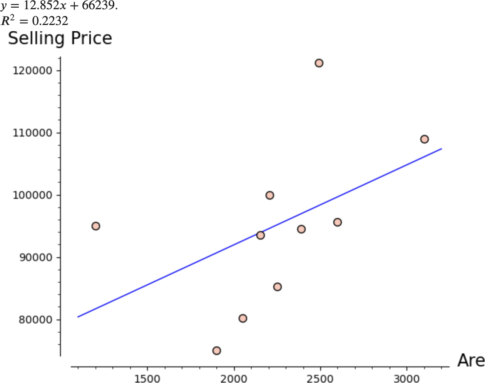
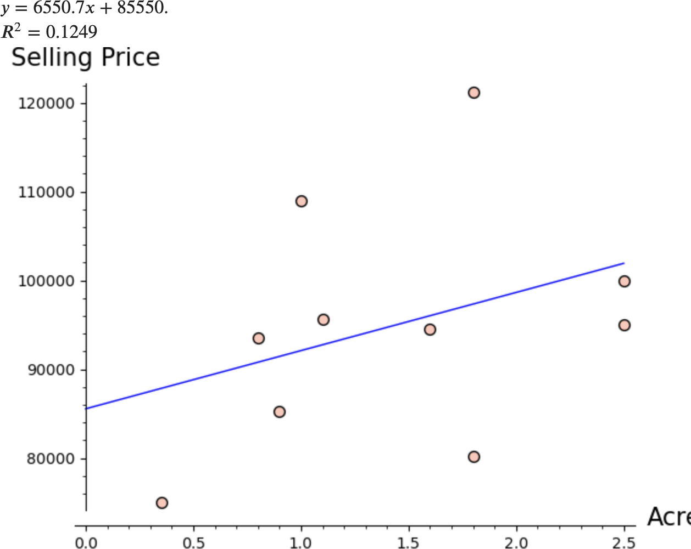

Section 7.4 Multiple Regression
In previous sections we have discussed predicting the value of one response variable \(y\) with one predictor variable \(x\text{.}\) In this section we will discuss using two or more predictor variables \(x_1, x_2, \dots , x_n\text{.}\) This topic is called multiple regression.
Consider the problem of predicting the selling price of a house. The selling price is affected by many factors including the age of the house, living area, number of bedrooms, etc. The table below lists the selling price, living area (in ft\({}^2\)), acres of land, and the number of bedrooms of 10 homes in a neighborhood.
Example 7.4.1. Single Predictor Variable.
Consider the graphs of Selling Price vs. Area and Selling Price vs. Acres as shown in Figure 7.4.2 below along with the linear regression equation for each.


Notice that the \(R^2\) value for the predictor variable Area is higher than the \(R^2\) value for Acres. This means that the regression equation for Selling Price in terms of Area will give a better predicted Selling Price than the equation in terms of Acres. We say that out of these two variables, Area is the best single-variable predictor of selling price.
Suppose a house has an area of 2,800 ft\({}^2\text{.}\)We could use the regression equation for Selling Price in terms of Area to predict that the house would sell for \(12.852(2,800) + 66,239 = \$102,224\text{.}\) This, of course, is only a point–estimate of the price, and probably not a very good estimate because the \(R^2\) value for the regression equation is only 0.2232.
Example 7.4.3. Multiple Predictor Variables.
Considering only one predictor variable is a bit too simple. Many variables affect the selling price, so we should consider more than one predictor variable in our regression equation. Suppose we consider both Area and Acres.
If we let \(y =\) Selling Price, \(x_1 =\) Area, and \(x_2 =\) Acres, we want to fit a model of the form
to the data where \(a_0\text{,}\) \(a_1\text{,}\) and \(a_2\) are constants. As in Section 7.3, ideally we want to satisfy the system of equations
We could take a matrix approach to find a least–squares solution to this system as we did before, but find_fit will do this automatically for us.
Such a model is called a multiple-regression equation.
We can compute the \(R^2\) value in the usual way.
Another important statistic is the Adjusted \(\pmb{R^2}\) value which is defined by
where \(n\) is the number of data points and \(k\) is the number of predictor variables (\(n = 10\) and \(k = 2\) in this case).
The adjusted \(R^2\) value takes into account the number of data points (the more data points, the higher the adjusted \(R^2\) value) and the number of predictor variables (the more predictor variables, the lower the adjusted \(R^2\) value). We want as simple a model as possible, so the fewer the variables, the better. We will compare different sets of predictor variables using adjusted \(R^2\) values.
The results for all the different combinations of predictor variables are shown in the table below.
Note that including the variable Bedrooms results in low \(R^2\) values. This indicates that the number of bedrooms is not a good predictor of the selling price. Also note that the \(R^2\) value for the set of all three predictor variables is the highest, but the adjusted \(R^2\) value is lower than that for Area and Acres. This indicates that the set of three variables gives better predictions (a higher \(R^2\) value), but the additional variable makes it more complicated, so it is less desirable as a model (a lower adjusted \(R^2\) value).
If we simply compare the adjusted \(R^2\) values, we conclude that the best combination of predictor variables is Area and Acres. To refine our model we might want to collect data on other variables that might affect the selling price such as age, total number of rooms, etc. With more variables, there are many different combinations of predictor variables we could consider. The process of determining which set of variables is best is very complicated. We have presented a very simple strategy here.
Example 7.4.4. Polynomial Models.
Let’s return to the problem of fitting a 2nd degree polynomial model of the form \(y = a + bx + cx^2\) to the set of four data points \(\{(1, 2) , (2, 4) , (3, 5) , (4, 2)\}\) as considered in Example 7.3.2. We could think of this as predicting the values of \(y\) with the “predictor” variables \(x\) and \(x^2\text{,}\) so it can be treated as a multiple regression problem.
These results give us the model \(y = -3.25+6.35x-1.25x^2\text{,}\) which is exactly the same as we got previously. Also note that the \(R^2\) value is 0.9333, exactly the same as before.
Example 7.4.5. Deer Population Again.
We can use a multiple regression approach to fit a model of the form \(y = a + bx + c \cos (\pi x/5) + d \sin (\pi x/5)\) to the transformed deer population data from the previous section.
In this case we have 3 predictor variables: \(x\text{,}\) \(\cos (\pi x/5)\text{,}\) and \(\sin (\pi x/5)\text{.}\)
These coefficients give us the approximate model
which is exactly the same as in Example 7.3.7. Also note that the \(R^2\) value is 0.8771 which should be (approximately) the same as that calculated in Exercise 7.3.2.2.
Exercises Exercises
1.
In an attempt to predict the final grade of students in an Introduction to Statistics class, the professor gives each student a 20-point pretest at the beginning of the year. The table below gives the final grade, pretest score, ACT score, and year (1 = freshman, 2 = sophomore, etc.) of 10 students.
Find the regression equation that predicts Grade in terms of Pretest Score. Repeat using Year and then ACT. Which of these single-variable predictors is best at predicting the final grade based on the \(R^2\) values? Does the pretest score alone appear to be a good predictor of the final grade? Explain.